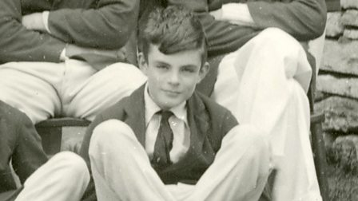

Você usa computador?
Agradeça a esse ateu e homossexual.
Alan Turing foi um matemático e criptógrafo inglês considerado atualmente como o pai da computação, uma vez que, por meio de suas ideias, foi possível desenvolver o que chamamos hoje de computador. Turing também ficou muito conhecido como um dos responsáveis por decifrar o código utilizado pelas comunicações nazistas durante a Segunda Guerra Mundial.
Por meio do seu trabalho, foi desenvolvida uma máquina conhecida como “bomba eletromecânica” (The Bombe, em inglês), que decifrou o código da máquina Enigma utilizado pelos alemães, e permitiu que os Aliados tivessem acesso a informações privilegiadas ao longo da guerra.
Se hoje temos acesso a computadores e às inovações da inteligência artificial, um dos grandes responsáveis por isso é o cientista e matemático britânico. Considerado uma das mentes mais brilhantes do século passado, Alan Turing desenvolveu a base da computação moderna e ajudou os aliados a vencerem a 2ª Guerra Mundial desvendando o Enigma da inteligência nazista.
Mas a confidencialidade de seu trabalho e a perseguição contra homossexuais na Inglaterra fizeram com que pouco de seu trabalho fosse reconhecido em vida. Apesar de suas contribuições significativas à sociedade, Turing foi condenado por indecência e sofreu castração química aos 39 anos. O motivo? Ele mantinha relações com outro homem, e a prática da homossexualidade era considerada um crime na Inglaterra — e só deixou de ser ilegal em 1967.
Alan Turing foi encontrado morto em sua cama. A princípio, acreditou-se que teria sido suicídio pela ingestão de cianeto, mas estudiosos concluíram que o envenenamento não passou de um acidente causado pelo uso de elementos químicos em experimentos caseiros.
- 1912 - Nascimento.
- 1934 - Graduou-se em matemática.
- 1936 - Obteve seu PhD.
- 1941 - "The Bombe" foi criada.
- 1952 - Foi condenado a castração
química. - 1954 - Morte.
- 2009 - O primeiro-ministro inglês
se desculpou em nome do governo. - 2013 - Foi perdoado da condenação
pela rainha Elizabeth II. - 2014 - "O Jogo da imitação" é
lançado em sua homenagem.